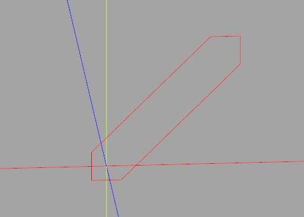

建立 Convex hull
November 27, 2021給你一組點，建立可以包裹這組點的凸多邊形或凸多面體，這稱為建立 Convex hull，常翻譯為建立凸包，而這個功能在 3D 建模中意外地好用。
如果你想打造程式庫，自行實作這個功能也不錯（可參考〈自訂 3D 物件〉），這一方面可以是個練習，另一方面也可以不用額外依賴第三方程式庫。
如果你只是想做做模型，畢竟 CadQuery 使用的就是 Python 語言，善用 Python 生態系中既有的方案，會是比較有效率的方式。
2D 凸包
例如，SciPy 的 scipy.spatial，就提供了 ConvexHull 函式，可以建立 2D/3D 凸包，如果你想較完整地認識 SciPy，可以參考一下〈笨學資料運算〉，不過，ConvexHull 函式的使用很直覺，就算不認識 SciPy，使用上應該也沒問題。
例如，ConvexHull 函式的官方文件，就示範了 2D 凸包的建立方式，不過，其中還用到了 NumPy、Matplotlib 等，現在是使用 CadQuery，因此來簡化一下它的範例：
from random import random
from scipy.spatial import ConvexHull
from cadquery import Vertex, Workplane
# 平面上的隨機點
points = [(random(), random()) for i in range(20)]
# 顯示隨機點
for p in points:
show_object(Vertex.makeVertex(p[0], p[1], 0))
# 建立凸包物件
hull = ConvexHull(points)
# vertices 取得凸包的頂點索引，逆時針順序
convex_pts = [points[i] for i in hull.vertices]
# 用 Wire 建立凸包
convex = (Workplane()
.polyline(convex_pts)
.close()
)
show_object(convex)
這會顯示以下的畫面，凸包構成的凸多邊形圍住了全部的點：

如果目的就是用 Wire 來建立凸包，寫個 hull2D 會比較方便一些：
from random import random
from scipy.spatial import ConvexHull
from cadquery import Vertex, Workplane
# 用 Wire 來建立凸包
def hull2D(points):
hull = ConvexHull(points)
return (cq.Workplane()
.polyline([points[i] for i in hull.vertices])
.close()
.val()
)
# 將 Workplane 中的 Wire 頂點轉為 (x, y)
def toPoints(workplane):
return [(v.X, v.Y) for v in workplane.vertices().vals()]
# 建立兩個四邊形的凸包
rect1 = Workplane().rect(5, 5)
rect2 = Workplane().center(20, 20).rect(5, 5)
convex = hull2D(toPoints(rect1) + toPoints(rect2))
show_object(convex)
這個範例順便示範了凸包的應用之一，將兩個形狀包裹，構成了一個新的形狀：

3D 凸包
若將這個範例延伸，可以進一步定義出簡單、具有寬度的 2D 畫線函式，這之後再來談，先來看看 3D 凸包，scipy.spatial 的 ConvexHull 函式可以接受 3D 的點，傳回的凸包物件，vertices 取得凸包頂點索引，透過 simplices 可以取得面索引。
雖說如下將 points、hull.simplices 丟給〈實作 polyhedron〉的 polyhedron 函式，也是可以建立凸多面體：
...
points = [(0, 0, 0), (1, 0, 0), (1, 1, 0), (0, 1, 0),
(0, 0, 1), (1, 0, 1), (1, 1, 1), (0, 1, 1)]
hull = ConvexHull(points)
box = polyhedron(points, hull.simplices)
show_object(box)
不過，若 points 有太多點不在凸包上，會讓 polyhedron 函式執行上很沒有效率，因此這邊做點過濾：
from random import random
from scipy.spatial import ConvexHull
from cadquery import Vector, Edge, Wire, Solid, Shell, Face
def polyhedron(points, faces):
def _edges(vectors, face_indices):
leng_vertices = len(face_indices)
return (
Edge.makeLine(
vectors[face_indices[i]],
vectors[face_indices[(i + 1) % leng_vertices]]
)
for i in range(leng_vertices)
)
vectors = [Vector(*p) for p in points]
return Solid.makeSolid(
Shell.makeShell(
Face.makeFromWires(
Wire.assembleEdges(
_edges(vectors, face_indices)
)
)
for face_indices in faces
)
)
# 建立 3D 版本的凸包
def hull3D(points):
hull = ConvexHull(points)
# 凸包上的頂點
vertices = [points[i] for i in hull.vertices]
# 用來查詢頂點的索引值
v_i_lookup = {v: i for i, v in enumerate(vertices)}
# 建立面索引
faces = [
[v_i_lookup[points[i]] for i in face]
for face in hull.simplices
]
return polyhedron(vertices, faces)
# 隨機點
points = [(random(), random(), random()) for i in range(10)]
convex = hull3D(points)
show_object(convex)
這會建立以下的模型：

類似地，藉由 hull3D，你可以用兩個 3D 實體，取得它們的頂點，以建立凸包的方式建立新的 3D 實體，將之延伸，可以進一步定義出簡單、具有厚度的 3D 畫線函式，這之後再來談了。